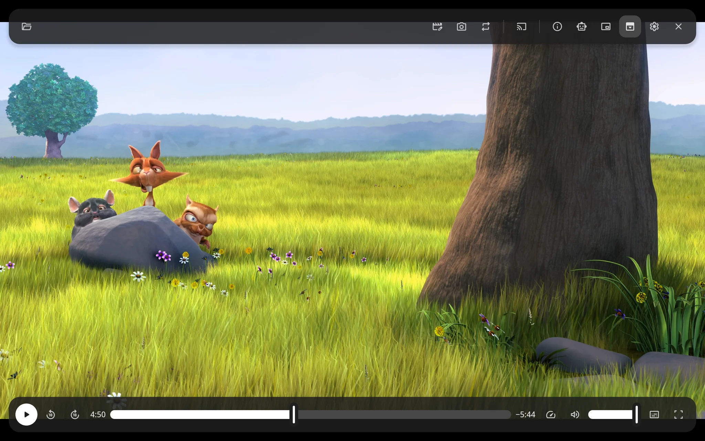

Plays almost anything
Every format FFmpeg reads, decoded on the graphics card where it can, HDR tone mapped for ordinary screens, with the file's chapters, tracks in the languages you prefer, and subtitles of every kind, ASS styled as made.
Simple media player that plays everything well. Video, audio, streams and web video, edited, exported and recorded, on your screen, on a TV or speaker, or across an AVB network, by yourself or with your favorite AI agent.
Download plaa 0.1.0 Source on GitHub
Free and open source under the GPL 3 on Linux, Windows and macOS. In 38 languages, including right-to-left.

Every format FFmpeg reads, decoded on the graphics card where it can, HDR tone mapped for ordinary screens, with the file's chapters, tracks in the languages you prefer, and subtitles of every kind, ASS styled as made.
HTTP, HLS, DASH, RTSP and SRT addresses, and web pages such as YouTube's through yt-dlp when you have it, in the quality that fits your screen or the one you choose.
Cut a file into clips and reorder them, turn and flip the picture, or ask the assistant to mix in other files and music or put it through filters. Export the result on your graphics card's encoder where there is one, or the sound alone, compressed or lossless. Nothing changes until you export.
A microphone or what the computer plays, the screen or a window with sound if you like, and a camera, as QuickTime Player does, in formats you choose.
A sound file shows its cover with a spectrum of what you hear or the file's waveform under it, or a scene in three dimensions that moves with the music.
Send the file or stream you play to a Chromecast, or a TV, speaker or program that plays DLNA, on your network, and play, pause, seek and set its volume from plaa's own controls and timeline.
Ask about what plays in a chat panel, and the assistant looks at it and plays, seeks, edits, mixes in sound, puts it through filters or exports it for you. Use a local model that stays on your computer, or a cloud model from Anthropic, OpenAI or Google with your own key.
Agents such as Claude Code see what plays, read any part of it, and control and edit the plaa you are using over MCP, only once you allow them, and asking before the steps you choose.
Material 3 toolbars float over the picture and slide away as you watch, or stay docked, in light or dark, in your system's accent color, picture in picture and full screen.
Media keys and the system's now-playing controls, a single running plaa that takes the files you open, Finder and Open With, and the Mac's own menu bar.


plaa is an AVB and Milan entity of its own on Linux, and uses the Mac's on macOS, so what it plays goes straight to the speakers, amplifiers and interfaces on your AVB network, in time with them. On Windows it does not send or play AVB streams.
A stereo stream on the network's own clock, at 48 kHz unless another rate is chosen, which any Milan controller can connect, starting once a listener is ready.
The listeners that can play plaa's sound, each with one button, and how the one you choose takes its stream, kept up to date as other controllers change them.
On Linux, with Send what plays on, the talkers on the network, each a button away from playing on this computer.
On Linux, where the switch has no AVB, plaa falls back to AVB Lite and sends each listener, up to five, a copy of its own, still in time with the rest of the network.
On Linux, plaa shares the network's reservations with triib's entity service where it runs, and keeps network time with ptp4l where nothing else does.
plaa 0.1.0 for Linux and Windows on x86_64 and ARM64, Linux on RISC-V, and macOS on Apple Silicon. Every file is on the release page, with checksums. On Linux each package uses its release's own FFmpeg; on Windows and macOS plaa carries its own.
| System | Download | Install |
|---|---|---|
| Windows 10 and 11 | Installer (.msi): x64 · ARM64 | Open it: it installs for you alone, with no administrator prompt |
| Windows, portable | .zip: x64 · ARM64 | Unpack it anywhere and run plaa.exe |
| macOS 14 and later, Apple Silicon | Installer package (.pkg): Apple Silicon | Open it. It lets plaa reach your AVB network too |
| Debian 13 | .deb: x86_64 · ARM64 · RISC-V | sudo apt install ./plaa_0.1.0-1.debian13_*.deb |
| Ubuntu 24.04 | .deb: x86_64 · ARM64 · RISC-V | sudo apt install ./plaa_0.1.0-1.ubuntu24.04_*.deb |
| Ubuntu 26.04 | .deb: x86_64 · ARM64 · RISC-V | sudo apt install ./plaa_0.1.0-1.ubuntu26.04_*.deb |
| Fedora 44 | .rpm: x86_64 · ARM64 | sudo dnf install ./plaa-0.1.0-1.fc44.*.rpm |
| Arch | PKGBUILD and plaa.install | makepkg -si in a folder with both |
The Windows installer and plaa.exe are signed by Scramble Tools LLC, and the macOS package with its Developer ID, notarized by Apple. Before a release goes out, each installer is installed, run and removed on a test machine, playing a video where the machine can show one, and upgraded from the release before where there is one. See what each system needs for what differs between them, and the release for the sources of the libraries the Windows and macOS packages carry.
Windows releases of plaa are signed by Scramble Tools LLC with Microsoft Azure Artifact Signing, and macOS releases with Scramble Tools' Developer ID, notarized by Apple.
plaa.exe, plaa.app and the
installers, built from this project's own
source code by its GitHub Actions release
workflow, and the libraries they carry: FFmpeg's DLLs from BtbN's builds, pinned by checksum,
libass and the libraries it needs, built from source by vcpkg in the workflow, and on macOS
the Homebrew libraries inside plaa.app. The Visual C++ runtime DLLs keep
Microsoft's own signatures.This program will not transfer any information to other networked systems unless specifically
requested by the user or the person installing or operating it. plaa goes online only to play
the addresses and web pages you open, through yt-dlp for web pages, and to open links you click.
On your local network it finds TVs and speakers when you open the Cast menu, serves the file you
cast to the one you choose while it plays, and, when you choose a network interface for AVB,
takes part in that network. Setting up the assistant, plaa looks for model servers on your computer
and asks a provider you add for its models. When you use the assistant, plaa sends the model
your messages and what it asks to see of what plays: to the provider you chose for a
cloud model, or to the server you gave for a local model. API keys stay in your system's
keychain. Agents reach plaa only through plaa --mcp on your own computer, once you
allow them. plaa has no accounts and sends no telemetry. This website sets no
cookies and loads nothing from other sites.